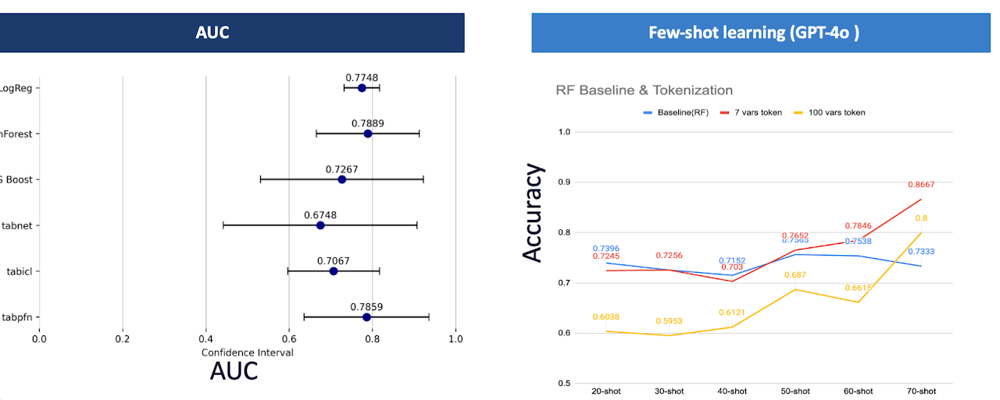
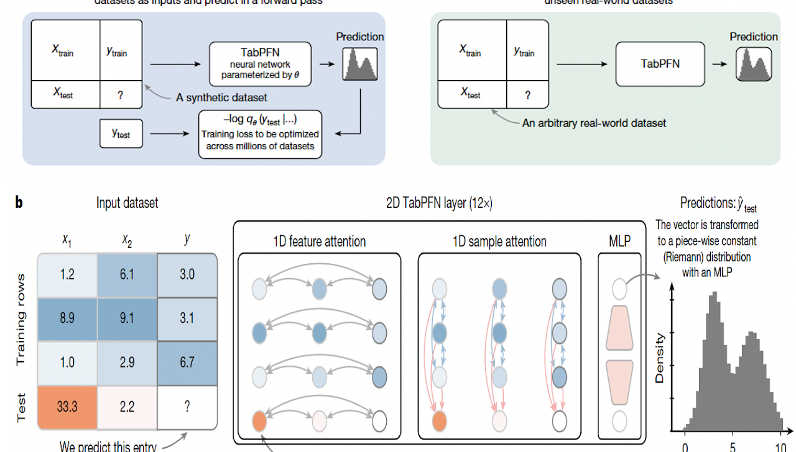
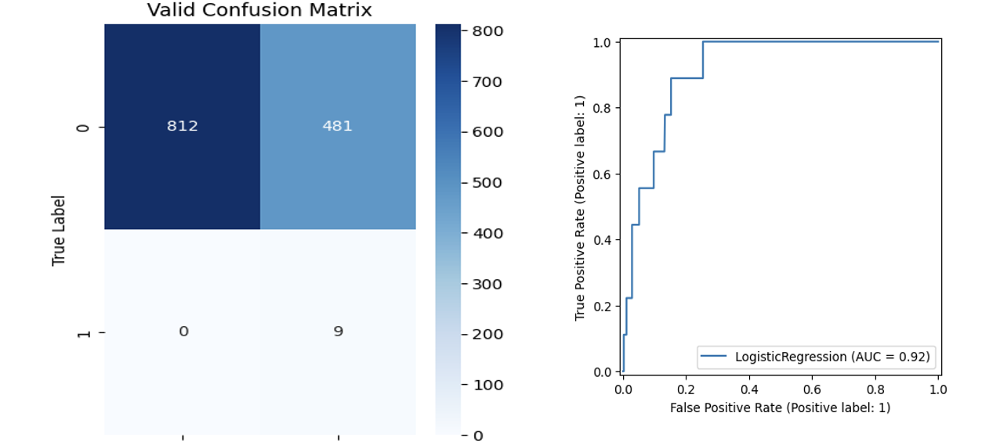
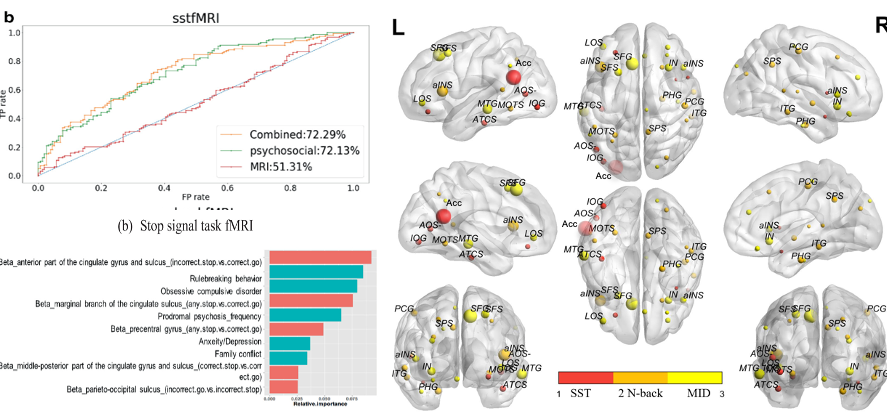
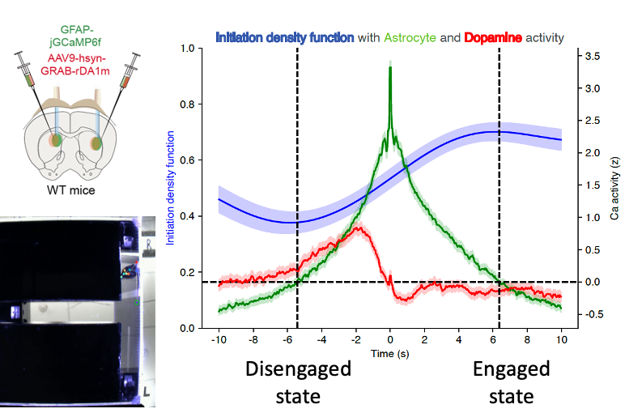
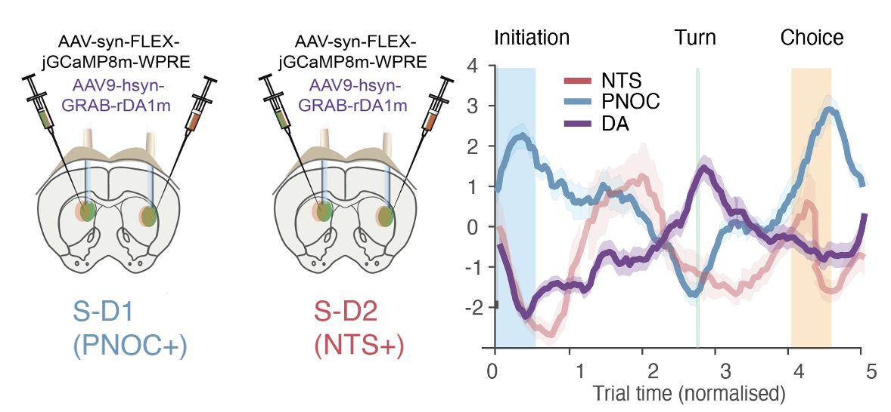
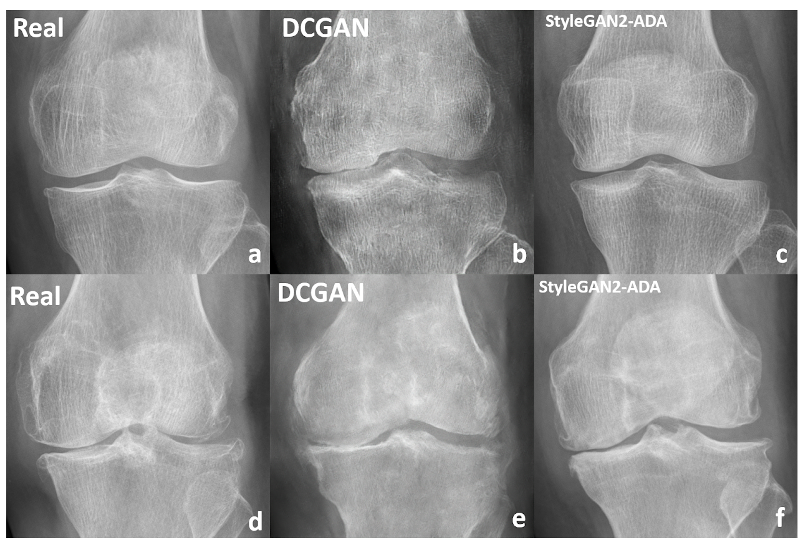

From computational psychiatry on population-scale adolescent cohorts to circuit-level neuroscience in the striatum.
2026 · NLP4PI @ EMNLP
Beyond the Flag: Clinical Framing Closes the Moderation Gap in Suicide Risk Measurement
Krishnan, Ahn & Kim. Accepted at the 5th Workshop on NLP for Positive Impact (NLP4PI), EMNLP 2026. Co-first and corresponding author.
Objective
Moderation APIs are built to flag policy-violating content, not to measure graded clinical risk. But a platform’s duty does not end at detection: the response owed to passive distress differs sharply from the response owed to active planning with means access, and emerging regulation (e.g. California Senate Bill 243) is turning that distinction into a compliance requirement. We ask how well deployed safety signals recover clinically meaningful severity.
Methods
We release a benchmark of 516 r/SuicideWatch posts rated by a licensed psychiatrist on a four-level ordinal schema (Indicator, Ideation, Behavior, Attempt) grounded in the Columbia Suicide Severity Rating Scale, and evaluate moderation APIs, prompted LLMs, and supervised baselines under seven ordinal-aware metrics.
Results
Vendor moderation APIs separate low from high severity well (0.860 high-risk F1) but measure severity poorly (0.395 macro F1), systematically over-predicting the most severe category. Clinically grounded zero-shot prompting recovers much of that gap (0.562 macro F1), and expert-authored framing is the effective lever, not fine-tuning, added reasoning, or naive multi-agent aggregation.
The ordinal metrics show the same split. An open-weight model prompted zero-shot, Llama 3.3 70B, lands within one severity level on 92.8% of posts against 82.2% for OpenAI's moderation endpoint at a fixed threshold, and reaches 0.684 QWK against 0.567.
What a clinician measures
516 r/SuicideWatch posts, each rated by a licensed psychiatrist on a four-level ordinal schema grounded in the Columbia Suicide Severity Rating Scale.
Indicator
Ideation
Behavior
Attempt
lower severityhigher severity →
What a moderation flag records, with all four levels collapsed into one bit:
not flagged
flagged
How well each system recovers the ordering
Two ordinal metrics, the same two systems. Higher is better on both.
Adjacent accuracy
Share of posts placed within one severity level of the psychiatrist's rating.
OpenAI Mod. (Fixed Thresh.)
0.822
Llama 3.3 70B (Zero-shot, open-weight)
0.928
0.00.51.0
Quadratic weighted kappa (QWK)
Agreement on an ordered scale, corrected for chance. Being two levels off is penalised four times as heavily as being one level off. 0 is chance, 1 is perfect.
OpenAI Mod. (Fixed Thresh.)
0.567
Llama 3.3 70B (Zero-shot, open-weight)
0.684
0.00.51.0
On the binary question, is this post high risk at all, the moderation API already reaches 0.860 F1. It can tell low from high. It cannot tell how high.
View the numbers as a table
Suicide risk measurement scores by method and metric
Method
Adj. Acc
QWK
Macro F1
High-risk F1
OpenAI Mod. (Fixed Thresh.)
0.822
0.567
0.377
0.850
OpenAI Mod. (Weighted)
0.855
0.604
0.395
0.860
Llama 3.3 70B (Zero-shot, open-weight)
0.928
0.684
0.498
0.855
Best clinically framed zero-shot (Claude Haiku 4.5)
0.888
0.696
0.562
0.836
A moderation flag is one bit; clinical severity is four ordered levels. The moderation API recovers the bit (0.860 high-risk F1) but not the ordering. An open-weight model prompted zero-shot places 92.8% of posts within one level, against 82.2% for the API, and reaches 0.684 QWK against 0.567.
Predict which autistic adults with anxiety will benefit from a smartphone-based mindfulness program, so that treatment selection does not default to trial and error.
Methods
Secondary analysis of a randomized controlled trial (n=73) of a 6-week smartphone mindfulness intervention, comparing six machine learning models under nested cross-validation using baseline questionnaire data.
Additionally tested GPT-4o few-shot learning, serializing baseline features into natural-language strings, against a matched random forest baseline.
Results
Random forest predicted state anxiety response with 79% AUC, with higher baseline anxiety, younger age, and greater childhood enjoyment of pretend play as the key predictors. Trait anxiety was not predictable.
GPT-4o given seven features reached 87% accuracy versus 73% for random forest on the same inputs.

Model comparison (left) and GPT-4o few-shot accuracy against the random forest baseline (right).
Predicting Suicidal Attempts Using Psychosocial Data: A Foundation Model Study from the ABCD Cohort
TabPFN, a foundation model for tabular data
92% AUC · 100% sensitivity
Objective
Build a foundation model to predict suicidal attempts in children at scale, using the largest ongoing U.S. study of brain development (ABCD Study, ~10,000 youth).
Methods
Using fMRI and self-questionnaire data from the largest ongoing study of brain development and children’s mental health in the United States (Adolescent Brain Cognitive Development study), I developed a machine learning model that sought potential predictors for suicidal tendencies in children.
Results
The model achieved 92% AUC with 100% sensitivity in predicting suicidal attempts.
The research inspired Wondi, precision psychiatry for digitally addicted adolescents.

TabPFN: a prior-fitted transformer that predicts on an unseen tabular dataset in one forward pass.

Validation confusion matrix and ROC curve. AUC 0.92, no missed attempts.2021 · Studies in Computational Intelligence
Identifying prepubertal children with risk for suicide using deep neural networks trained on multimodal brain imaging
Suicide is among the leading causes of death in youth worldwide. Early identification of children with high risk for suicide is key to effective screening and intervention strategies. Yet little is known about the neural pathways to the clinical outcomes of youth suicide.
Methods
Using fMRI and self-questionnaire data from the largest ongoing study of brain development and children’s mental health in the United States (Adolescent Brain Cognitive Development study), I developed a machine learning model that sought potential predictors for suicidal tendencies in children.
Results
In the model designed to predict childhood suicidality, the feature of highest importance was the activation level of the anterior cingulate cortex during the stop-signal task, followed by established risk factors such as emotion regulation, impulsivity, and family environment.

Model performance by modality, top feature importances, and the contributing brain regions.
Astrocyte function in relation to dopamine in the striatum
Located within the basal ganglia, the striatum is fundamental to processes like motor control and reward-based learning. Recent studies highlight an intricate relationship between dopamine and striatal astrocytes. We propose that, via gliotransmitter release or dopamine modulation, astrocytes might play a pivotal role in shaping striatal pathways, ultimately influencing decision-related behaviors.
Methods
Using optogenetic techniques, we stimulated dopamine neurons in the SNpc while concurrently monitoring astrocyte activity. We used two-color photometry imaging to simultaneously capture dopamine and astrocyte activity in the dorsolateral and dorsomedial striatum of freely moving mice during a maze-based decision-making task. DeepLabCut-driven behavioral recordings enabled precise behavior categorization.
Results
The data revealed a two-way relationship between dopamine and astrocytes, with surges in astrocyte calcium following dopamine activity peaks, while decreasing dopamine activity correlated with increased astrocyte responses. Astrocytes were strongly reactive to optogenetically induced dopamine release, and dopamine levels declined following astrocyte optogenetic activation.
During the switch in behavioral states, from disengaged to engaged, we observed heightened astrocyte calcium activity. These calcium peaks correlated with the onset of active engagement, hinting at a possible role for astrocytes in initiating engagement.

Simultaneous astrocyte (green) and dopamine (red) recordings across the disengaged-to-engaged transition.
The role of direct D1 (S-D1) and indirect D2 (S-D2) expressing neurons in striosomes
To understand basal ganglia function, we need to understand the output functions of these forebrain systems. Much is known about the direct and indirect pathways that originate in the striatal matrix and end in the brainstem motor nuclei, but little is known about the circuits underlying non-motor functions of the basal ganglia. Previous work has suggested that striosomes could be important for these: they are preferentially innervated by limbic-related regions of neocortex and by limbic structures such as the bed nucleus of the stria terminalis.
Methods
Using in vivo two-color photometry calcium imaging, we monitored the dynamics of S-D1 and S-D2 neurons, as well as dopamine release, in pairs of simultaneous recordings in the dorsolateral striatum (DLS) and the dorsomedial striatum (DMS), using transgenic mice and viral methods during a probabilistic T-maze decision-making task.
I developed a comprehensive computational analysis pipeline, using unsupervised clustering to dissect mouse behavior frame by frame, and implemented reinforcement learning algorithms to calculate action values from past rewards. I created a package to synchronize trial events across differing intra-event intervals, enabling a nuanced examination of how action value shapes neuronal activity and dopamine release while isolating these effects from movement.
Results
Only S-D1 neuronal activity, not S-D2, shows pronounced peaks at both the beginning and end of trials, potentially important in the transition from goal-driven behavior to a more nearly ‘packaged’, chunked habitual status of the practiced runs.

S-D1 (PNOC+) and S-D2 (NTS+) striosomal populations and dopamine across the trial.
High-resolution knee radiography image synthesis using StyleGAN2 with adaptive discriminator augmentation
In this retrospective study, 10,000 anteroposterior (AP) knee radiographs from a single institution were used to create a medical dataset that is more balanced and cheaper to produce.
Methods
By training generative adversarial networks on unlabeled X-ray images and employing principal component analysis within the GAN’s latent space, I identified the principal components that signified size, orientation, and osteoarthritis progression in knee images, then generated images depicting the advancement of arthritis by adjusting latent vectors along the third principal component.
Results
We generated knee X-ray images that accurately reflected the characteristics of each arthritis progression stage, images that neither human experts nor artificial intelligence could distinguish from real ones. Our research opens the potential to adopt generative models to synthesize realistic anonymous images, addressing both data scarcity and class imbalance.

Real radiographs (a, d) against DCGAN (b, e) and StyleGAN2-ADA (c, f) synthesized images.